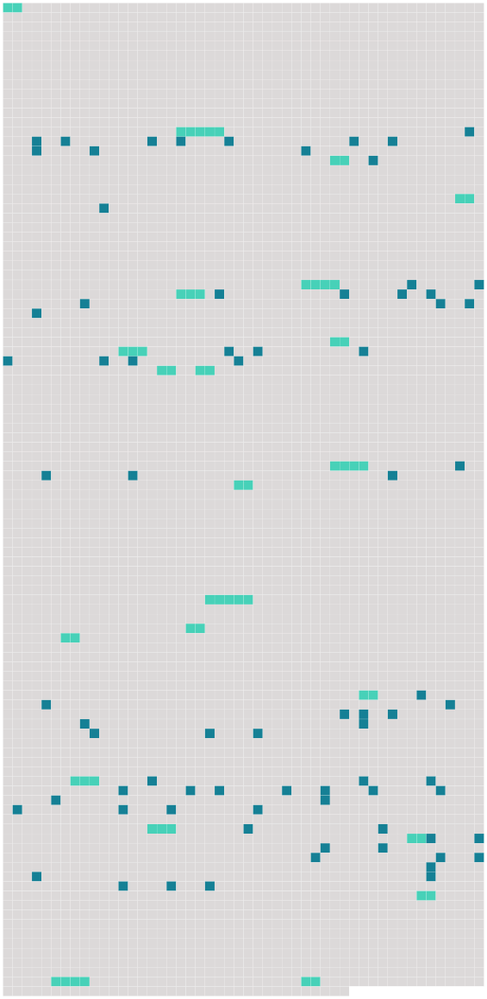

Longueur nb maillons : 99 mentions |
|
[MADEMOISELLE FIFI] [11 phrases]
Dans la salle ils trouvèrent les trois officiers de moindre grade : un lieutenant, Otto de Grossling ; deux sous-lieutenants, Fritz Scheunaubourg et [le marquis Wilhem d'Eyrik] , un tout petit blondin fier et brutal avec les hommes, dur aux vaincus, et violent comme une arme à feu. Depuis [son] entrée en France, [ses] camarades ne [l'] appelaient plus que Mlle Fifi.
Ce surnom [lui] venait de [sa] tournure coquette, de [sa] taille fine qu'on aurait dit tenue en un corset, de [sa] figure pâle où [sa] naissante moustache apparaissait à peine, et aussi de l'habitude qu' [il] avait prise, pour exprimer [son] souverain mépris des êtres et des choses, d'employer à tout moment la locution française--fi, XXXfi doncXXX, qu' [il] prononçait avec un léger sifflement.
La salle à manger du château d'Uville était une longue et royale pièce dont les glaces de cristal ancien, étoilées de balles, et les hautes tapisseries des Flandres, tailladées à coups de sabre et pendantes par endroits, disaient les occupations de [Mlle Fifi] , en [ses] heures de désoeuvrement. [5 phrases]
Mais [Mlle Fifi] cassait à tout moment le sien, et un soldat immédiatement [lui] en présentait un autre. [16 phrases] Bien que l'averse continuât avec autant de furie, le major affirma qu'il faisait moins sombre, et le lieutenant Otto annonçait avec conviction que le ciel allait s'éclaircir, [Mlle Fifi] [elle -même] ne semblait pas tenir en place. [Elle] se levait, se rasseyait. [Son] oeil clair et dur cherchait quelque chose à briser. Soudain, fixant la dame aux moustaches, [le jeune blondin] tira [son] revolver. « Tu ne verras pas cela toi », dit [-il] ; et, sans quitter [son] siège, [il] visa. [1 phrases] Puis [il] s'écria : « Faisons la mine!! [1 phrases]
La mine, c'était [son] invention, [sa] manière de détruire, [son] amusement préféré. [4 phrases]
Non qu'on les eût pillés, le major comte de Farlsberg ne l'aurait point permis ; mais [Mlle Fifi] , de temps en temps, faisait la XXXmineXXX ; et tous les officiers, ce jour -là, s'amusaient vraiment pendant cinq minutes. [Le petit marquis] alla chercher dans le salon ce qu'il [lui] fallait.
[Il] rapporta une toute mignonne théière de Chine famille Rose qu' [il] emplit de poudre à canon, et, par le bec, [il] introduisit délicatement un long morceau d'amadou, l' [alluma] , et [courut] reporter cette machine infernale dans l'appartement voisin. Puis [il] revint bien vite, en fermant la porte. [1 phrases] [Mlle Fifi] , entrée [la première] , battait des mains avec délire devant une Vénus de terre cuite dont la tête avait enfin sauté ; et chacun ramassa des morceaux de porcelaine, s'étonnant aux dentelures étranges des éclats, examinant les dégâts nouveaux, contestant certains ravages comme produits par l'explosion précédente ; et le major considérait d'un air paternel le vaste salon bouleversé par cette mitraille à la Néron et sablé de débris d'objets d'art. [12 phrases] Seul, [le petit marquis Wilhem] aurait bien voulu forcer la cloche à sonner. [Il] enrageait de la condescendance politique de [son] supérieur pour le prêtre ; et chaque jour [il] suppliait le commandant de le laisser faire « Ding-don-don, » une fois, une seule petite fois, pour rire un peu seulement.
Et [il] demandait cela avec des grâces de chatte, des cajoleries de femme, des douceurs de voix d'une maîtresse affolée par une envie ; mais le commandant ne cédait point, et [Mlle Fifi] , pour se consoler, faisait la XXXmineXXX dans le château d'Uville. [17 phrases]
» [5 phrases] [Le marquis] , sous prétexte de l'embrasser, venait de lui souffler un jet de tabac dans la bouche.
Elle ne se fâcha point, ne dit pas un mot, mais elle regarda fixement [son possesseur] avec une colère éveillée tout au fond de son oeil noir. [9 phrases] [Mlle Fifi] avait pris Rachel sur [ses] genoux, et, s'animant à froid, tantôt [il] embrassait follement les frisons d'ébène de son cou, humant par le mince intervalle entre la robe et la peau la douce chaleur de son corps et tout le fumet de sa personne ; tantôt à travers l'étoffe, [il] la pinçait avec fureur, la faisant crier, saisi d'une férocité rageuse, travaillé par son besoin de ravage.
Souvent aussi, la tenant à pleins bras, l'étreignant comme pour la mêler à [lui] , [il] appuyait longuement [ses] lèvres sur la bouche fraîche de la juive, la baisait à perdre haleine ; mais soudain [il] la mordit si profondément qu'une traînée de sang descendit sur le menton de la jeune femme et coula dans son corsage. Encore une fois, elle [le] regarda bien en face, et, lavant la plaie, murmura : « Ça se paye, cela. » [Il] se mit à rire, d'un rire dur.
« [Je] payerai », dit [-il] [8 phrases]
» [2 phrases] [je] n'en ai jamais vu, [moi] [1 phrases]
»
» [2 phrases] » Et [il] s'animait : « Nous sommes leurs maîtres!! [1 phrases]
» [Il] se leva, tendit [son] verre jusqu'au milieu de la table et [répéta] : « A nous la France et les Français, les bois, les champs et les maisons de France!! [4 phrases] Alors, [le petit marquis] posa sur la tête de la juive [sa] coupe de Champagne emplie à nouveau : « A nous aussi, cria-t [-il] , toutes les femmes de France!! [1 phrases] Les lèvres tremblantes, elle bravait du regard [l'officier] [qui] riait toujours, et [elle] balbutia, d'une voix étranglée de colère : « Ça, ça, ça n'est pas vrai, par exemple, vous n'aurez pas les femmes de France.
»
» [2 phrases]
»
Un mot qu' [il] prononçait fut coupé dans [sa] gorge ; et [il] resta béant, avec un regard effroyable. [1 phrases] En deux minutes, [Mlle Fifi] fut morte. [16 phrases]
Comme il lui fallait un prétexte afin de sévir sans contrainte, il fit venir le curé et lui ordonna de sonner la cloche à l'enterrement [du marquis d'Eyrik] [1 phrases]
Et quand le corps de [Mlle Fifi] , porté par des soldats, précédé, entouré, suivi de soldats qui marchaient le fusil chargé, quitta le château d'Uville, allant au cimetière, pour la première fois la cloche tinta son glas funèbre avec une allure allègre, comme si une main amie l'eût caressée. |
 |
Il est possible de télécharger la ressource sur la page Ortolang |
Si vous avez des questions ou vous voyez des erreurs, merci d'envoyer un mail à silvia.federzoni89@gmail.com |